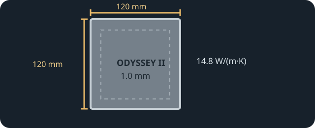

[ INDIVIDUAL COMPONENT // COOLING ]
Thermalright EXTREME ODYSSEY II 120 × 120 × 1.0 mm
Gray 120 × 120 mm, 1 mm thermal pad with manufacturer-rated 14.8 W/(m·K) conductivity and 9.8 kV breakdown voltage.

IDENTIFICATION: Use the exact 120 × 120 × 1.0 mm variant. Thermalright also lists different sizes and thicknesses; the product name alone does not determine a host's required pad size.
Manufacturer specifications
| Catalog subcategory | Thermal Accessories |
|---|---|
| Exact model | Thermalright EXTREME ODYSSEY II 120 × 120 × 1.0 mm |
| Material | Thermal pad; a more specific formulation is not stated in the linked model listing. |
| Dimensions / thickness | 120 × 120 mm; 1.0 mm thick. |
| Thermal conductivity | 14.8 W/(m·K), manufacturer product rating. |
| Electrical properties | Electrically insulating; breakdown voltage 9.8 kV, per Thermalright. |
| Other maker ratings | Gray; density 3.1 ± 0.2 g/cm³; hardness 30–55 Shore C. |
Application & compatibility cautions
- Verify that the host requires a 1.0 mm pad at the exact target position; do not use a sheet's larger cuttable area to imply fit or to span unrelated components.
- Follow Thermalright's installation directions and the host's pad map. Avoid stacking, folding, or changing the original cooler spacing.
- Power down, protect exposed circuitry during cutting and placement, and check contact at neighboring chips before reassembly.
Manufacturer sources
- Thermalright — EXTREME ODYSSEY II 120 × 120 × 1.0 mmManufacturer model page, specifications, and product resources.
- Thermalright — EXTREME ODYSSEY II product familyManufacturer listing for the ODYSSEY II thermal-pad family.
This static catalog entry is an identification aid, not a compatibility guarantee; OEM pad maps and thickness requirements take precedence.